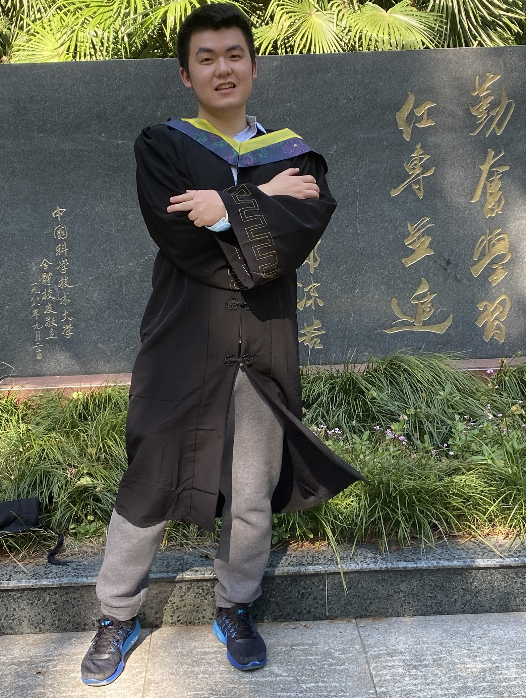

Personal Webpage of Hua Tong.
This site has been visited times.
Education: Nanjing Foreign Language School(2016.9-2018.7)-University of Science and Technology of China(2018.9-2022.7)-Carnegie Mellon University MechE PhD(2022.9-2027.7 expected)
I'm co-advised by Prof. Yongjie Jessica Zhang and Prof. Eni Halilaj. My research interests lie in finite element method algorithms(e.g. mesh generation), data-driven simulation, and machine learning(e.g. computer vision and reinforcement learning).
Below are my other useful links. Feel free to check them out.